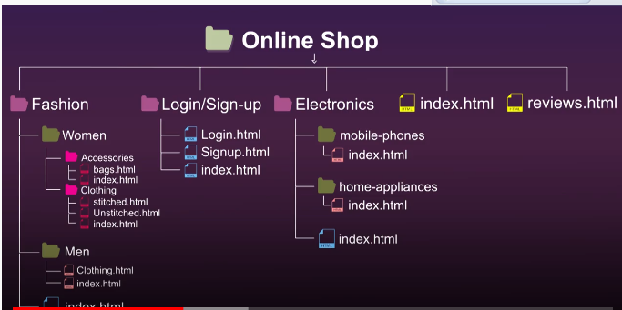

A directory is organization unit or container used to organize files/folders in herirachial structure.Folders in a website are called Directories.
Top level folder=Root folder(all files and flders are contained in the root folder)
Grandparents==>Parents==>Child

Here Online Shoping==> Grandparent(also parent of Fashion,login etc)
(Fashion,Login,Electronics etc)===> Parent(also child of Online shop)
(Women,Men,login.html,mobile-phones etc)===>Child(also grand child of grand parent)
(mobile-phones==>index.html)===>grandchild
Accessing Sibling Folder(Same Folder/Same Level)
Index.html and reviews.html are on same level so to access reviews.html from index.html we use
"a'tag open href="reviews.html">Navigate me to reviews "a'tag close
Accessing Child Folder
"Login-signup" is a parent and "login.html" is child so to access login.html from parent we use
"a'tag open href="login-singup/login.html">Navigate me to login page "a'tag close
Accessing Grand Child
"a'tag open href="Electronics/mobile-phones/index.html">Navigate me to mobile phone page "a'tag close
Accessing Parent Folder
example: from login.html to index.html
"a'tag open href="../index.html">Navigate me to home page "a'tag close
Accessing GrandParent Folder
Example: from index.html to mobile-phones then to index.html
"a'tag open href="../../index.html">Navigate me to home page "a'tag close